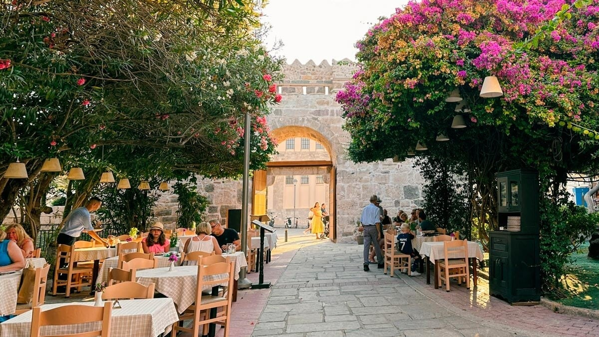
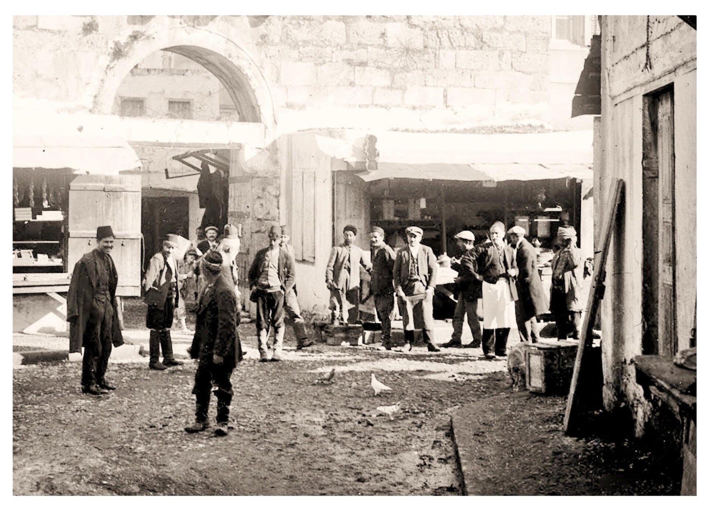
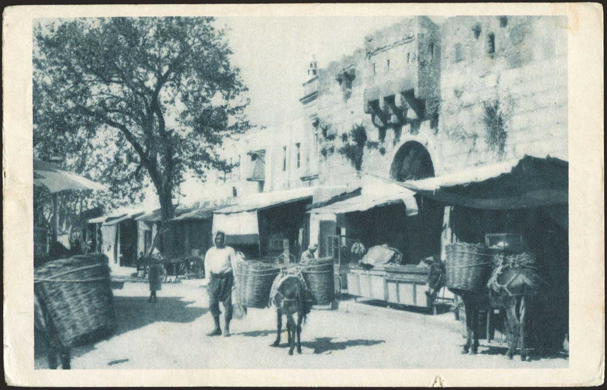
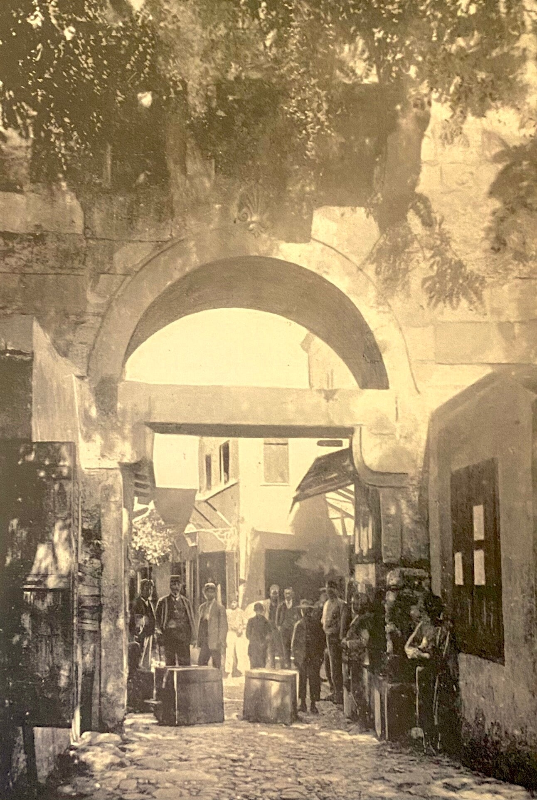
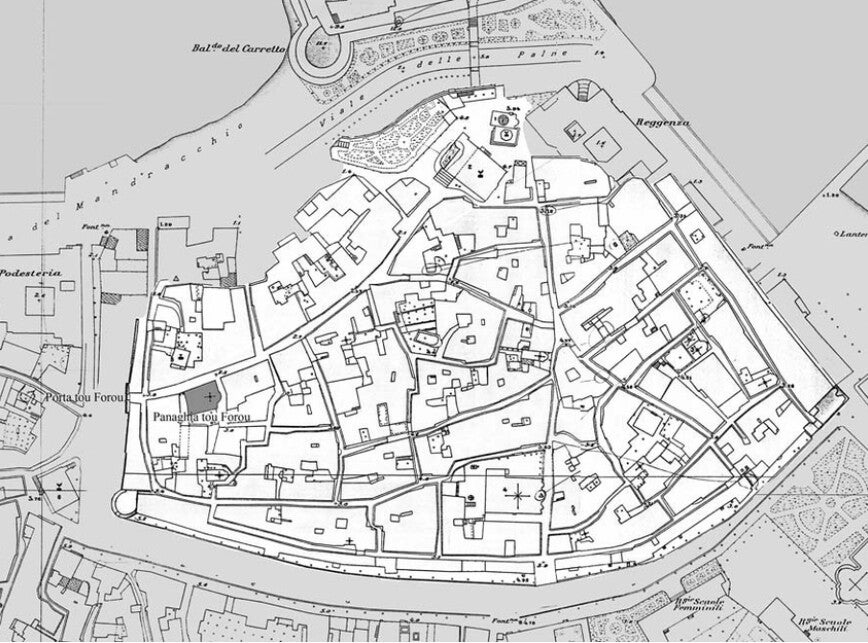

Middeleeuwse toegangspoort waar handelaars tol betaalden om hun waren binnen de stadsmuren te verkopen.
Porta tou Forou
De Belastingpoort heet in het Grieks Porta tou Forou: porta = poort, tou forou = van de belasting. Handelaars moesten hier tol betalen om hun waren binnen de muren te mogen verkopen.
Ridders van Sint-Jan
Eind 1300 lieten de Ridders van de Orde van Sint-Jan een verdedigingswerk rond de stad bouwen tegen invallen en piraterij. In die middeleeuwse muur zaten vijf ingangen; vandaag staan er nog twee, waaronder deze Belastingpoort.
De poort is gebouwd met hergebruikte stenen en zuilen uit de Romeinse tijd – een slimme middeleeuwse gewoonte om snel en voordelig te bouwen.
Direct bij de Agora
Achter de poort ligt het terrein van de oude marktplaats (Agora). Je ziet er nog overblijfselen van zuilengangen, tempels en winkels uit de Hellenistische en Romeinse periode.
Foto’s van vroeger
De Belastingpoort was een geliefde fotospot, met weelderige paarse en roze bougainvillea’s – perfect voor vakantiefoto’s. Hieronder foto’s van hoe de poort er vroeger uitzag.

Porta tou Forou
Detail
Historisch
Vroeger
ArchiefAardbeving 2017
In juli 2017 trof een beving van 6,7 op de schaal van Richter het eiland en richtte schade aan in het oude centrum. De poort en de begroeiing zijn daardoor veranderd, maar de plek blijft historisch en de moeite waard.
Bezoeken
Gratis, altijd van buitenaf te zien. Ligt in Kos-stad, bij de Agora en het centrum.
Tip: combineer met de Agora en de Westelijke opgraving – alles op loopafstand.